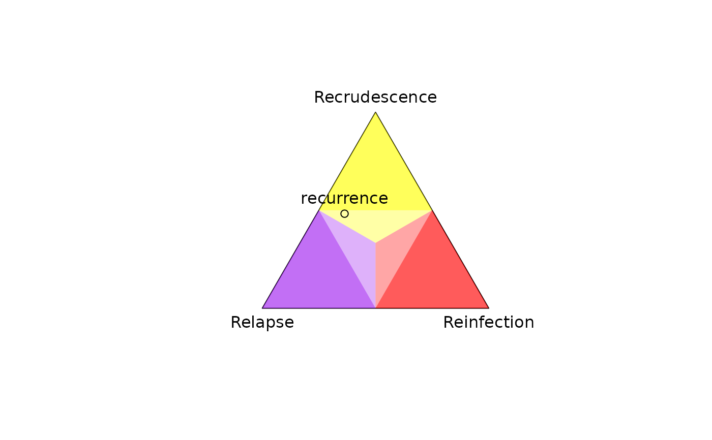

Compute posterior probabilities of P. vivax recurrence states
Source:R/compute_posterior.R
compute_posterior.RdComputes per-person posterior probabilities of P. vivax recurrence states —
recrudescence, relapse, reinfection — using per-person genetic data on two
or more episodes. For usage, see Examples below and
demonstrate-usagevignette on Pv3Rs basic usage.
For a more complete understanding of compute_posterior output, see
https://aimeertaylor.github.io/Pv3Rs/articles/posterior-probabilitiesUnderstanding posterior probabilities.
Note: The progress bar may increment non-uniformly (see Details); it may appear stuck when computations are ongoing.
Usage
compute_posterior(
y,
fs,
prior = NULL,
MOIs = NULL,
return.RG = FALSE,
return.logp = FALSE,
progress.bar = TRUE
)Arguments
- y
List of lists encoding allelic data. The outer list contains episodes in chronological order. The inner list contains named markers per episode. Marker names must be consistent across episodes.
NAindicates missing marker data; otherwise, specify a per-marker vector of distinct alleles detected (presently,compute_posteriordoes not support data on the proportional abundance of detected alleles). Repeat alleles andNAentries within allelic vectors are ignored. Allele names are arbitrary, allowing for different data types, but must correspond with frequency names.- fs
List of per-marker allele frequency vectors, with names matching marker names in
y. Per-marker alleles frequencies mut contain one frequency per named allele, with names matching alleles iny. Per-marker frequencies must sum to one.- prior
Matrix of prior probabilities of recurrence states per episode, with rows as episodes in chronological order, and columns named "C", "L", and "I" for recrudescence, relapse and reinfection, respectively. Row names are ignored. If
NULL(default), per-episode recurrence states are assumed equally likely a priori.- MOIs
Vector of per-episode multiplicities of infection (MOIs); because the Pv3Rs model assumes no genotyping errors,
MOIsmust be greater than or equal to the most parsimonious MOI estimates compatible with the data; seedetermine_MOIs(y). These are the estimates used whenMOIs = NULL(default).- return.RG
Logical; returns the relationship graphs (default
FALSE). Automatically set toTRUEifreturn.logp = TRUE.- return.logp
Logical; returns the log-likelihood for each relationship graph (default
FALSE). SettingTRUEdisables permutation symmetry optimisation and thus increases runtime, especially when MOIs are large. Does not affect the output of the posterior probabilities; seevignette("demonstrate-usage")— clickable online (offline link) — which also contains an example of permutation symmetry.- progress.bar
Logical; show progress bars (default
TRUE). Note that the progress bar may update non-uniformly.
Value
List containing:
margMatrix of marginal posterior probabilities for each recurrence, with rows as recurrences and columns as "C" (recrudescence), "L" (relapse), and "I" (reinfection). Each marginal probability sums over a subset of joint probabilities. For example, the marginal probability of "C" at the first of two recurrences sums over the joint probabilities of "CC", "CL", and "CI".
jointVector of joint posterior probabilities for each recurrence state sequence; within a sequence "C", "L", and "I" are used as above.
RGsList of lists encoding relationship graphs; returned only if
return.RG = TRUE(defaultFALSE), and with log-likelihoods ifreturn.logp = TRUE(defaultFALSE). A relationship graph encoded as a list can be converted into aigraphobject usingRG_to_igraphand thus plotted usingplot_RG. For more details on relationship graphs, seeenumerate_RGs.
Details
compute_posterior() computes posterior probabilities proportional to
the likelihood multiplied by the prior. The likelihood sums over:
ways to phase allelic data onto haploid genotypes
graphs of relationships between haploid genotypes
ways to partition alleles into clusters of identity-by-descent
We enumerate all possible relationship graphs between haploid genotypes,
where pairs of genotypes can either be clones, siblings, or strangers. The
likelihood of a sequence of recurrence states can be determined from the
likelihood of all relationship graphs compatible with said sequence. More
details on the enumeration of relationship graphs can be found in
enumerate_RGs. For each relationship graph, the model sums over
all possible identity-by-descent partitions. Because some graphs are
compatible with more partitions than others, the log p(Y|RG) progress bar may
advance non-uniformly. We do not recommend running `compute_posterior() when
the total genotype count (sum of MOIs) exceeds eight because there are too
many relationship graphs.
Notable model assumptions and limitations:
All siblings are regular siblings
Recrudescent parasites derive only from the immediately preceding episode
Recrudescence, relapse and reinfection are mutually exclusive
Undetected alleles, genotyping errors, and de novo mutations are not modelled
Population structure and various other complexities that confound molecular correction are not modelled
Examples
# Numerically named alleles
y <- list(enrol = list(m1 = c('3','2'), m2 = c('1','2')),
recur1 = list(m1 = c('1','4'), m2 = c('1')),
recur2 = list(m1 = c('1'), m2 = NA))
fs <- list(m1 = c('1' = 0.78, '2' = 0.14, '3' = 0.07, '4' = 0.01),
m2 = c('1' = 0.27, '2' = 0.73))
compute_posterior(y, fs, progress.bar = FALSE)
#> Number of valid relationship graphs (RGs) is 250
#> Computing log p(Y|RG) for 250 RGs
#> Finding log-likelihood of each vector of recurrence states
#>
#> $marg
#> C L I
#> recur1 0.0000000 0.1949556 0.8050444
#> recur2 0.2938829 0.2476598 0.4584573
#>
#> $joint
#> CC LC IC CL LL IL CI
#> 0.00000000 0.05539481 0.23848807 0.00000000 0.05314490 0.19451493 0.00000000
#> LI II
#> 0.08641590 0.37204139
#>
# Arbitrarily named alleles, plotting per-recurrence posteriors
y <- list(enrolment = list(marker1 = c("Tinky Winky", "Dipsy"),
marker2 = c("Tinky Winky", "Laa-Laa", "Po")),
recurrence = list(marker1 = "Tinky Winky",
marker2 = "Laa-Laa"))
fs <- list(marker1 = c("Tinky Winky" = 0.4, "Dipsy" = 0.6),
marker2 = c("Tinky Winky" = 0.1, "Laa-Laa" = 0.1, "Po" = 0.8))
plot_simplex(p.coords = compute_posterior(y, fs, progress.bar = FALSE)$marg)
#> Number of valid relationship graphs (RGs) is 30
#> Computing log p(Y|RG) for 30 RGs
#> Finding log-likelihood of each vector of recurrence states
#>

# Episode names are cosmetic: "r1_prior" is returned for "r2"
y <- list(enrol = list(m1 = NA), r2 = list(m1 = NA), r1 = list(m1 = NA))
prior <- matrix(c(0.6,0.7,0.2,0.3,0.2,0), ncol = 3,
dimnames = list(c("r1_prior", "r2_prior"), c("C", "L", "I")))
suppressMessages(compute_posterior(y, fs = list(m1 = c(a = 1)), prior))$marg
#> Warning: Data and prior episode names disagree
#> Warning: Marker m1 has data on fewer than two episodes
#> Warning: Episodes enrol & r2 & r1 have no data
#> C L I
#> r2 0.6 0.2 0.2
#> r1 0.7 0.3 0.0
prior
#> C L I
#> r1_prior 0.6 0.2 0.2
#> r2_prior 0.7 0.3 0.0
# Prior is returned when all data are missing
y_missing <- list(enrol = list(m1 = NA), recur = list(m1 = NA))
suppressMessages(compute_posterior(y_missing, fs = list(m1 = c("A" = 1))))
#> Warning: Marker m1 has data on fewer than two episodes
#> Warning: Episodes enrol & recur have no data
#> $marg
#> C L I
#> recur 0.3333333 0.3333333 0.3333333
#>
#> $joint
#> C L I
#> 0.3333333 0.3333333 0.3333333
#>
# Return of the prior re-weighted to the exclusion of recrudescence:
suppressMessages(compute_posterior(y_missing, fs = list(m1 = c("A" = 1)),
MOIs = c(1,2)))
#> Warning: Marker m1 has data on fewer than two episodes
#> Warning: Episodes enrol & recur have no data
#> $marg
#> C L I
#> recur 0 0.5 0.5
#>
#> $joint
#> C L I
#> 0.0 0.5 0.5
#>
# (Recrudescing parasites are clones of previous blood-stage parasites. The
# Pv3R model assumes no within-host de-novo mutations and perfect allele
# detection. As such, recrudescence is incompatible with an MOI increase on
# the preceding infection.)
# Beware provision of unpaired data: the prior is not necessarily returned;
# for more details, see link above to "Understand posterior estimates"
y <- list(list(m1 = c('1', '2')), list(m1 = NA))
fs <- list(m1 = c('1' = 0.5, '2' = 0.5))
suppressMessages(compute_posterior(y, fs))$marg
#> Warning: Marker m1 has data on fewer than two episodes
#> Warning:
#> C L I
#> [1,] 0.3292683 0.3414634 0.3292683